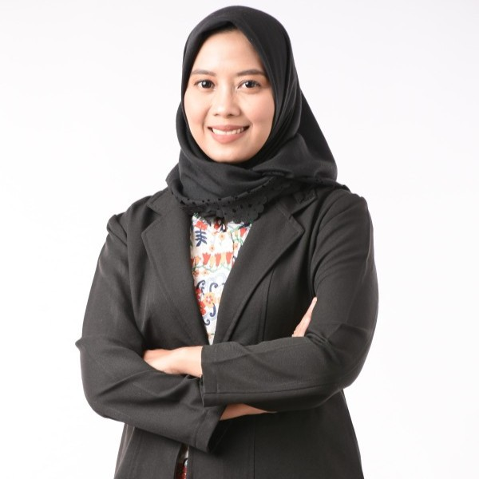

Pentingnya Sistem Isyarat Kata Kunci (Signalong) dalam Komunikasi Anak Tunarungu
Bagaimana adaptasi metode Signalong dari Inggris membantu mempercepat pemahaman kosa kata anak dengan hambatan pendengaran dan komunikasi di TK inklusi Indonesia.
Kepala Prodi & Dosen Pendidikan Luar Biasa
Universitas Negeri Surabaya (UNESA)
Peneliti Pendidikan Inklusif & Pendidikan Luar Biasa. Berfokus pada intervensi komunikasi (Signalong Indonesia), sikap guru lintas budaya, dan hak disabilitas.
Lihat Publikasi Terpilih →
Gelar Doktor (Ph.D.)
Dr. Khofidotur Rofiah adalah dosen dan peneliti di Departemen Pendidikan Luar Biasa, Universitas Negeri Surabaya (UNESA) sejak 2014. Sebelum bergabung dengan UNESA, beliau berkarier sebagai guru pendidikan khusus di sekolah-sekolah penyelenggara pendidikan inklusif di Surabaya (2011–2013).
Beliau menyelesaikan studi doktoral di Pedagogical University of Cracow, Polandia (2020–2024) dengan disertasi tentang sikap guru terhadap pendidikan inklusif di Indonesia dan Polandia. Saat ini fokus risetnya mencakup pengembangan sistem komunikasi berbasis kata kunci untuk anak dengan hambatan komunikasi (Signalong Indonesia), pendidikan inklusif lintas budaya, dan pendidikan untuk anak berkebutuhan khusus.
Fokus riset dedikatif untuk mendorong aksesibilitas dan kesetaraan hak pendidikan bagi anak berkebutuhan khusus.

Pengembangan sistem komunikasi berbasis kata kunci (keyword sign system) untuk anak dengan hambatan komunikasi, diadaptasi dari sistem Signalong Inggris untuk konteks Indonesia.
Riset komparatif lintas budaya mengenai sikap, persiapan pedagogis, dan persepsi guru terhadap pendidikan inklusif di Indonesia, Polandia, Jerman, Slovakia, dan Kamerun.
Strategi literasi, media pembelajaran visual (Big Books berbasis isyarat), dan pengembangan sarana komunikasi bagi peserta didik dengan hambatan pendengaran.
Intervensi berbasis bukti untuk anak dengan ADHD, autisme, disabilitas intelektual, serta strategi pengurangan risiko bencana (DRR) berbasis inklusi di pendidikan anak usia dini.
DOKUMENTASI RISET & INOVASI
Gunakan filter kategori dan pencarian langsung untuk menjelajahi 45+ artikel ilmiah bereputasi internasional.
Artikel ringkas mengenai perkembangan riset pendidikan inklusif, pengabdian masyarakat, dan catatan kepakaran.
Bagaimana adaptasi metode Signalong dari Inggris membantu mempercepat pemahaman kosa kata anak dengan hambatan pendengaran dan komunikasi di TK inklusi Indonesia.
Refleksi dari disertasi doktor di Pedagogical University of Cracow mengenai perbedaan kultur, tantangan pedagogis, dan kesiapan fasilitas pendukung inklusi.
Membangun kesiapsiagaan bencana bagi anak berkebutuhan khusus melalui media pembelajaran visual dan buku cerita berbasis isyarat.
Dokumentasi riset lapangan, pengabdian masyarakat, dan kegiatan akademik internasional.
Tautan langsung ke berbagai indeksasi riset dan direktori profil publik akademis.
355+ Sitasi · H-Index & i10-Index
45 Publikasi · 12.602 Reads
Author ID: 57196192608
Profil Dosen Terverifikasi
Paparan Publikasi & Draf
SINTA ID: 6010778 · Terverifikasi